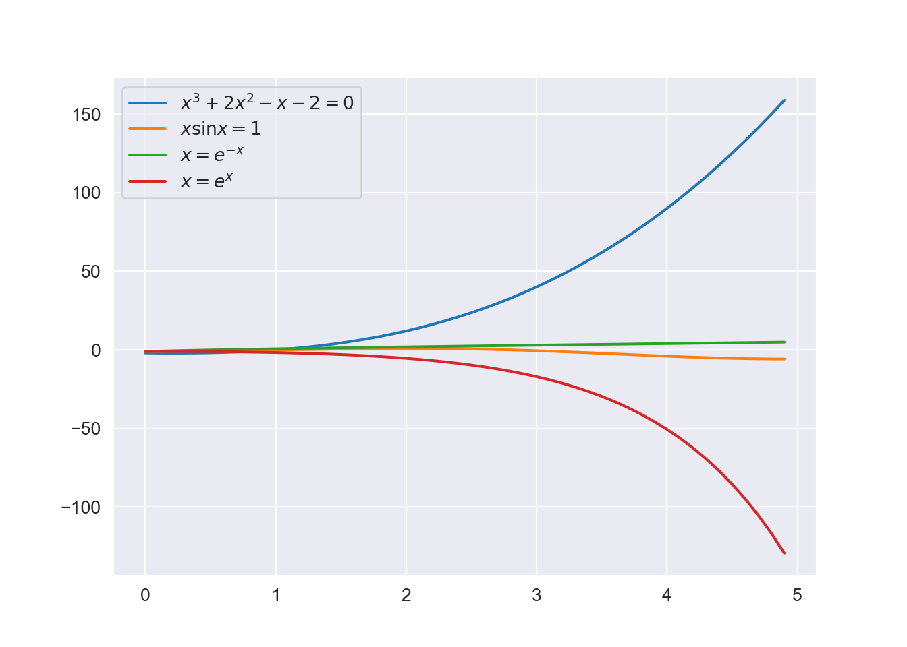
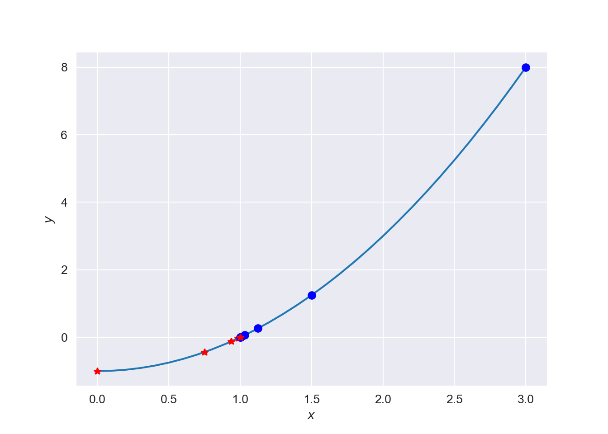
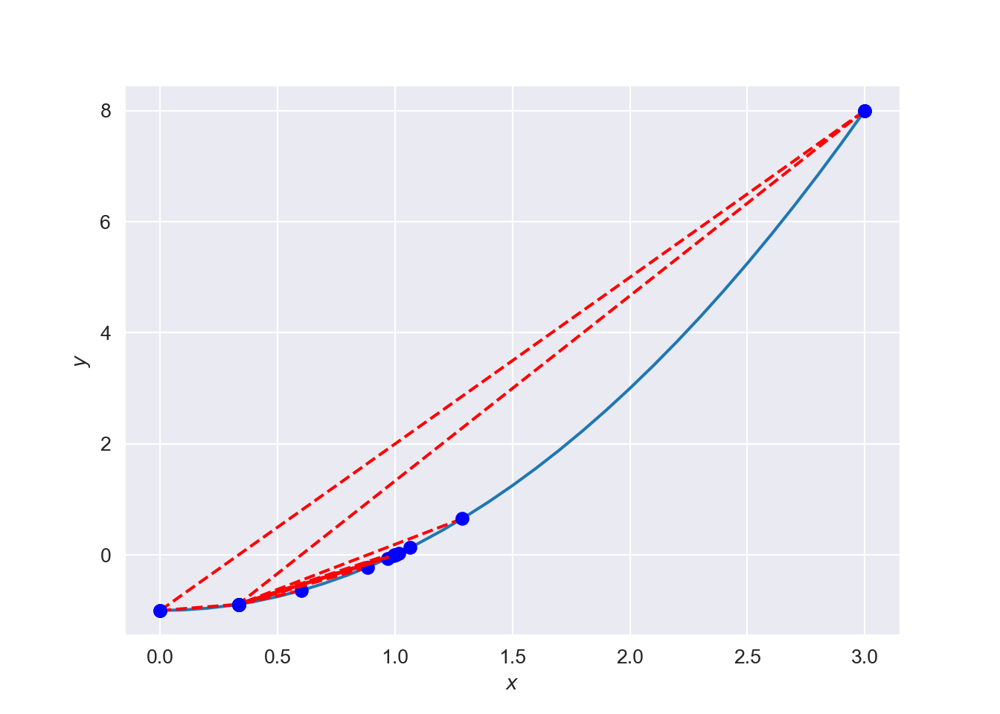
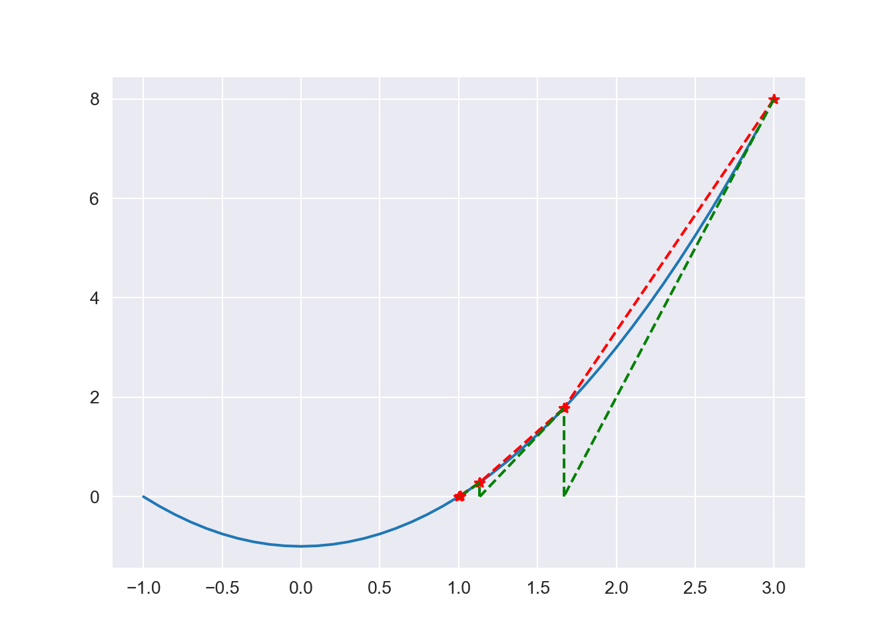
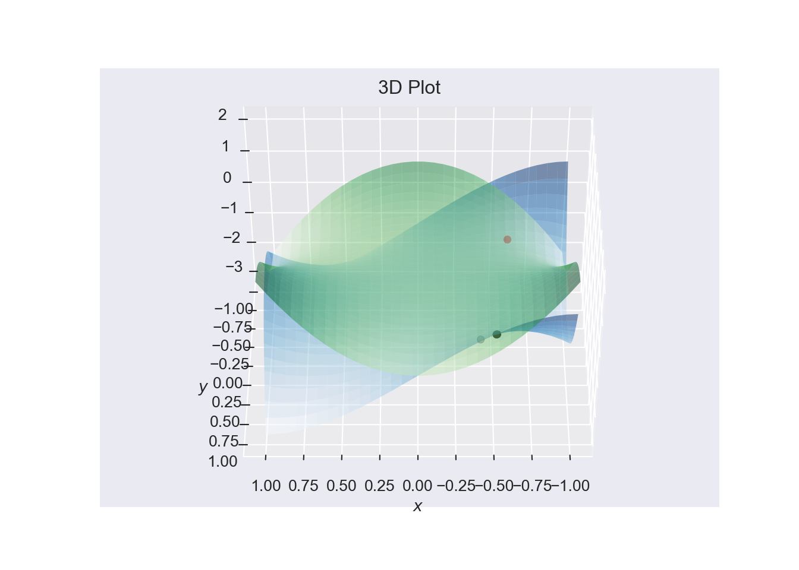

Chapter 3 Numerical Solutions to Nonlinear Equations
Non-linear equations occur in many world problems and are rarely solvable analytically.
It is of great importance to solve equations of the form \[f(x)=0\] in many applications in science and engineering. The values of \(x\) that make \(f(x)=0\) are called the roots (or the zeros) of this equation.
This type of problem also includes determining the points of intersection of curves. If \(f(x)\) and \(g(x)\) represent equations of two curves, the intersection points correspond to the roots of the function \(F(x)=f(x)-g(x)=0\).
Examples of nonlinear equations:
- \(ax^2+bx+c =0\) (two roots).
- \(x^3+2x^2-x-2=0\) (three roots)
- \(x\sin x=1\) (infinitely many roots).
- \(x=e^{-x}\) (one root)
- \(x=e^{x}\) (No roots)

3.1 Nonlinear equations in one unknown: \(f(x)=0\)
We shall examine two types of iterative methods for determining the roots of the equation \(f(x)=0,\) namely:
- Bracketing methods, also known as interval methods.
- Fixed point methods
To obtain these intervals or initial approximations graphical methods are usually used.
3.1.1 Interval Methods
These methods require an initial interval which is guaranteed to contain a root. The width of this interval (bracket) is reduced iteratively until it encloses the root to a desired accuracy.
3.1.2 Bisection Method
The bisection method is an incremental search method in which the interval is always divided in half.
Intermediate value theorem:
If \(f(x)\) is real and continuous in an interval \([a,b]\) and \(f(a)f(b)<0\), then there exists a point \(c\in(a,b)\) such that \(f(c)=0\).
If we calculate the midpoint of \([a,b]\) i.e., \[c={1\over 2}(a+b)\] then:
- If \(f(a)f(c)<0\) then \(f(a)\) and \(f(c)\) have opposite signs and so the root must lie in the smaller interval \([a,c]\).
- If \(f(a)f(c)>0\) then \(f(a)\) and \(f(c)\) have the same signs and so \(f(b)\) and \(f(c)\) must have opposite signs, so the root lies in \([c,b]\).
3.1.2.1 Example
Perform two iterations of the bisection method on the function \(f(x) = x^2 -1\), using \([0,\,3]\) as your initial interval.
Answer: The root lies at \(1\), but after two iterations, the interval will be \([0.75,\,1.5]\).
f = lambda x: x**2 - 1
x = np.arange(-1, 3, 0.1)
y = f(x)
a = 0
b = 3
tol = 10**-3
val = bisection_plot(f, a, b, tol) 
Stopping Criteria:
We use a stopping criteria of \[|b_n-a_n|<\epsilon\] We have \[\begin{eqnarray*} |b_1-a_1| &=& |b-a|\\ |b_2-a_2| &=& {1\over 2}|b_1-a_1|\\ \vdots\\ |b_n-a_n| &=& {1\over 2}|b_{n-1}-a_{n-1}|\\ &=& {1\over 2^2}|b_{n-2}-a_{n-2}|\\ &=& {1\over 2^{n-1}}|b_1 -a_1| \end{eqnarray*}\]
We require that \(|b_n-a_n|\approx \epsilon\) which implies \[ {1\over 2^{n-1}}|b_1 -a_1|\approx \epsilon, \qquad \mbox{or} \quad {2^n=2{|b_1-a_1|\over \epsilon}}\] or \[\begin{equation} n=\log\left(2 {|b_1-a_1|\over \epsilon}\right)/\log 2 \end{equation}\]
3.1.2.2 Example
Find the root of \(f(x) = \sin(x) - 0.5\) between \(0\) and \(1\). Iterate until the interval is of length \(\frac{1}{2^3}\)
Answer: the final interval is \([0.5,\,0.625]\). \(f(0.5) = -0.0206\)
- Bisection will always converge to a root if the function is continuous.
- Reliable but slow. The method does not exploit any knowledge about the function in question.
- Convergence rate is linear. It gains the same amount of accuracy from iteration to iteration.
3.1.3 False position method or Regula Falsi
The bisection method is attractive because of its simplicity and guaranteed convergence. Its disadvantage is that it is, in general, extremely slow.
Regula Falsi algorithm is a method of finding roots based on linear interpolation. Its convergence is linear, but it is usually faster than bisection. On each iteration a line is drawn between the endpoints \((a,f(a))\) and \((b,f(b))\) and the point where this line crosses the \(x-\)axis taken as the point \(c\).
f = lambda x: x**2 - 1
x = np.arange(-1, 3, 0.1)
y = f(x)
a = 0
b = 3
tol = 10**-3
val = false_position_plot(f, a, b, tol) 
The equation of the line through \((a,f(a))\) and \((b,f(b))\) is \[y=f(a)+{x-a\over b-a}(f(b)-f(a)).\] We require the point \(c\) where \(y=0\), i.e. \[ f(c) = f(a)+{c-a\over b-a}(f(b)-f(a))=0,\] from which we solve for \(c\) to get: \[\begin{equation} c = {af(b)-bf(a)\over f(b)-f(a)} \end{equation}\] The sign of \(f(c)\) determines which side of the interval does not contain the root, which side is discarded to give a new, smaller interval containing the root. The procedure is continued until the interval is sufficiently small.
3.1.3.1 Example
Perform two iterations of the false position method on the function \(f(x) = x^2 -1\), using \([0,\,3]\) as your initial interval. Compare your answers to those of the bisection method.
Answer: False position, in other words, performs a linear fit onto the function, and then directly solves that fit.
With Bisection we obtain the following,
| \(a\) | \(c\) | \(b\) |
|---|---|---|
| 0 | 1.5 | 1.5 |
| 0.75 | 0.75 | 1.5 |
| 0.75 | 1.125 | 1.125 |
| 0.9375 | 0.9375 | 1.125 |
| 0.9375 | 1.03125 | 1.03125 |
| 0.984375 | 0.984375 | 1.03125 |
Stopping criteria
The false position method often approaches the root from one side only, so we require a different stopping criteria from that of the bisection method. We usually choose: \[|c-c^*|<\epsilon\] where \(c^*\) is the value of \(c\) calculated from the previous step.
- Normally faster than Bisection Method. Can decrease the interval by more than half at each iteration.
- Superlinear convergence rate. Linear convergence rate in the worst case.
- Usually approaches the root from one side.
3.1.3.2 Exercise
Use the bisection method and the false position method to find the root of \(f(x)=x^2-x-2\) that lies in the interval \([1,4]\).
3.1.4 Fixed Point Methods
For these methods we start with an initial approximation to the root and produce a sequence of approximations, each closer to the root than its predecessor.
3.1.5 Newton’s Method
This is one of the most widely used of all root-finding formulae. It works by taking as the new approximation the point of intersection of the tangent to the curve \(y=f(x)\) at \(x_i\) with the \(x\)–axis. Thus we seek to solve the equation \(f(x)=0\), where \(f\) is assumed to have a continuous derivative \(f^\prime\).
Newton developed this method for solving equations while wanting the find the root to the equation \(x^3-2x-5 =0\). although he demonstrated the method only for polynomials, it is clear he realised its broader applications.

Newton’s method can be derived in several ways; we choose to do it using Taylor series.
Let \(x_{i+1}=x_i+h\) and obtain a Taylor’s expansion of \(f(x_{i+1})\) about \(x_i\), \[\begin{equation} f(x_{i+1})=f(x_i)+h f^{\prime}(x_i)+ {h^2\over 2}f^{\prime\prime}(x_i)+\cdots \label{newton} \end{equation}\]
An approximation is obtained by truncating the Taylor series after two terms: \[f(x_{i+1})\approx f(x_i)+h f^{\prime}(x_i)\] Thus this series has an error \(O(h^2)\).
Ideally \(f(x_{i+1})=0\) so that solving for \(h\) gives \[ h=-{f(x_i)\over f^\prime(x_i)},\quad\ \ \ {\rm provided}\quad \ \ \ f^\prime(x_i)\ne 0.\] Therefore \[\begin{equation} x_{i+1}=x_i+h=x_i-{f(x_i)\over f^{\prime}(x_i)},\quad i=0,1,2,\cdots\tag{3.1} \end{equation}\] which is called Newton’s (or Newton-Raphson’s) iterative formula.
- Requires the derivative of the function.
- Has quadratic convergence rate. Linear in worst case.
- May not converge if too far from the root.
- Could get caught in basins of attraction with certain sinusoidals .
3.2 Newton’s Method for Systems of Nonlinear Equations
Newton’s method may also be used to find roots of a system of two or more non-linear equations.
Consider a system of two equations: \[\begin{equation} f(x,y)=0, \qquad \ \ \ \ g(x,y)=0, \end{equation}\] Using Taylor’s expansion of the two functions near \((x,y)\) we have \[\begin{eqnarray} f(x+h,y+k)&=& f(x,y) + h{\partial f\over \partial x}+ k{\partial f\over \partial y} + {\rm terms\; in}\; h^2,\; k^2,\; hk\\ g(x+h,y+k)&=& g(x,y) + h{\partial g\over \partial x}+ k{\partial g\over \partial y} + {\rm terms\; in}\; h^2,\; k^2,\; hk \end{eqnarray}\] and if we keep only the first order terms, we are looking for a couple \((h,k)\) such that: \[\begin{eqnarray} f(x+h,y+k)&=&0\approx f(x,y) + h{\partial f\over \partial x}+ k{\partial f\over \partial y} \\ g(x+h,y+k)&=&0\approx g(x,y) + h{\partial g\over \partial x}+ k{\partial g\over \partial y} \end{eqnarray}\] hence it is equivalent to the linear system: \[\begin{eqnarray} \left[\begin{array}{ll} {\partial f\over\partial x}& {\partial f\over\partial y}\\ {\partial g\over\partial x}& {\partial g\over\partial y}\end{array}\right] \left[\begin{array}{c} h\\k\end{array}\right]= -\left[\begin{array}{c} f(x,y)\\g(x,y)\end{array}\right] \tag{3.2} \end{eqnarray}\] The \(2\times 2\) matrix is called the Jacobian matrix (or Jacobian) and is sometimes denoted as: \[ J(x,y)=\left[\begin{array}{ll} {\partial f\over\partial x}& {\partial f\over\partial y}\\ {\partial g\over\partial x}& {\partial g\over\partial y}\end{array}\right] \] The couple \((h,k)\) is thus \[ \begin{bmatrix}h\\k\end{bmatrix}=-J^{-1}(x,y)\begin{bmatrix}f(x,y)\\g(x,y)\end{bmatrix} \] The general Jacobian of a a \((n\times n)\) matrix for a system of \(n\) equations and \(n\) variables, \((x_1,x_2,\ldots,x_n)\) is immediate: \[ J=\left[\begin{array}{lll} {\partial f_1\over\partial x_1}& {\partial f_1\over\partial x_2},\cdots {\partial f_1\over \partial x_n}\\ {\partial f_2\over\partial x_1}& {\partial f_2\over\partial x_2}\,\cdots {\partial f_2\over \partial x_n}\\ \vdots & \ddots\ \ \ \vdots\\ {\partial f_n\over\partial x_1}& {\partial f_n\over\partial x_2}\,\cdots {\partial f_n\over \partial x_n} \end{array}\right] \]
If we define \(x_{i+1}=x_i+h\) and \(y_{i+1}=y_i+k\) then the equation(3.2) suggests the iteration formula: \[ \left[\begin{array}{l} x_{i+1}\\ y_{i+1} \end{array}\right]= \left[\begin{array}{c} x_i\\y_i\end{array}\right]- J^{-1}(x_n,y_n) \left[\begin{array}{l} f(x_i,y_i)\\ g(x_i,y_i) \end{array}\right] \] Starting with an initial guess \((x_0,y_0)\) and under certain conditions it’s possible to show that this iteration process converges to a root of the system.
3.2.0.1 Exercise
Use Newton’s method to look for a root near \(x_0=-0.6,\quad y_0=0.6\). \[\begin{eqnarray*} f(x,y)&=&x^3-3x y^2-1\\ g(x,y)&=&3x^2y-y^3 \end{eqnarray*}\]
Answer: \(x^* = [-0.5, \ 0.8660]\)
F = lambda x: np.array([x[0]**3 - 3*x[0]*x[1]**2 - 1,
3*x[0]**2*x[1] - x[1]**3])
J = lambda x: np.array([[3*x[0]**2 - 3*x[1]**2, -6*x[0]*x[1]],
[6*x[0]*x[1], 3*x[0]**2 - 3*x[1]**2]])
x0 = np.array([-.6, .6])
tol = 1e-6
o1, o2, o3 = newton_system(F, J, x0, tol)
print('The final solution of x is:')## The final solution of x is:## [-0.5 0.86602539]## It took 4 iterations
3.2.1 Exercises
- Show that the equation \(x=\cos x\) has a solution in the interval \([0,\pi/2]\). Use the bisection method to reduce the interval containing the solution to a length of 0.2.
- Use the bisection method to solve \[ \; e^{-x}=\ln x,\quad a=1,\quad b=2\]
- Apply (i) the bisection method (ii) False Position and (iii) Newton’s method to solve each of the following equations to, at least, 6D. \[(a)\; x^2=e^{-x}\quad\quad (b)\; 2x=\tan x,\;\; {\rm near} \quad\ \ \ x=1\]
- Make one Newton iteration for each of the following systems: \[(a)\;\;x y^2=y e^x,\quad\ \ x\cos y-1=e^{-y},\quad\ \ \ {\rm near}\quad \ \ \ (0,1)\] \[(b)\;\;f_1(x,y)=x^2-2y^2-1 ,\quad \ \ \ f_2(x,y)=x^3y^2-2,\quad\ \ {\rm near} \quad (1.5,1)\]
- Briefly explain how bracketing algorithms work to find zeros of one dimensional functions and describe two variations used in practice.
- Is Newton’s Method guaranteed to find the zero of any continuous function that has a zero and for any starting point?
- Given an initial bracket of \([0,100]\), how many steps of Bisection Method are required to reduce the bracket size below 10\(^{-15}\)?
- Explain the meaning of the phrase: A convergent numerical method is qualitatively just as good as an analytical solution
- Motivate the False-Position Method, why is it generally preferable to the Bisection Method?
- Use Newton’s method to find a solution to the following system: \[\begin{eqnarray} v - u^3 = 0, \\ u^2 + v^2 - 1 =0, \end{eqnarray}\] given a starting value of \((1, 2)\). Plot the curves along with successive approximations to determine if it is indeed true that the approximations approach the intercept.